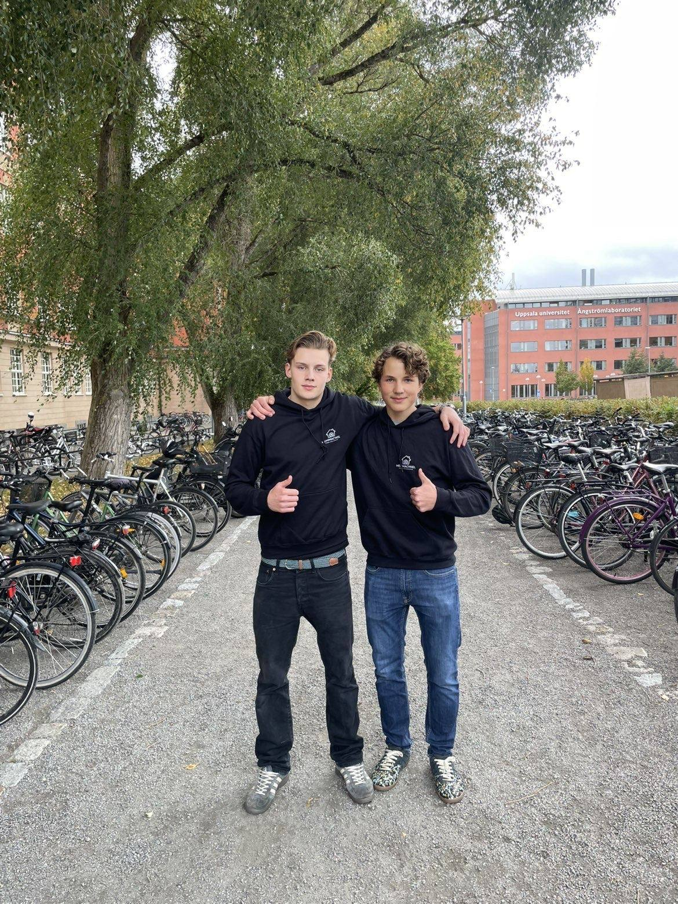
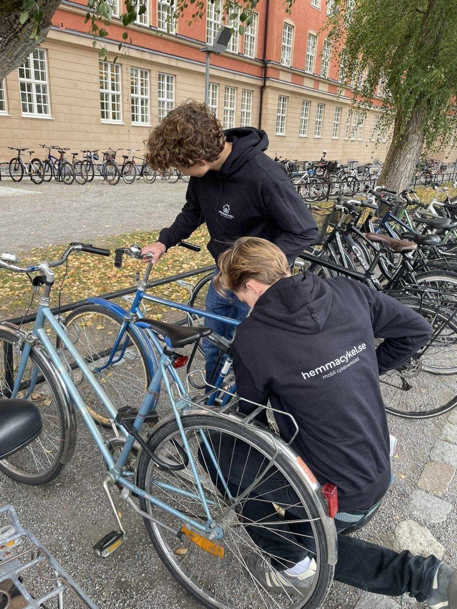

Om oss
Två unga entreprenörer från Uppsala.
Vi startade Hemmacykel för att ge Uppsalabor mer tid och mindre krångel. En bokning, en tid som passar dig, och sedan fungerar cykeln igen.

Därför finns vi
Låt inte en trasig cykel stoppa dig.
Cykeln tar dig till jobbet, träningen, kompisarna och familjen. När den går sönder försvinner inte bara möjligheten att cykla. Du förlorar tid, frihet och en del av det som får vardagen att fungera.
Därför ska cykelservice passa din vardag, inte tvärtom. Vi reparerar din cykel direkt hemma hos dig i Uppsala, så att du slipper släpa den till verkstaden, vänta på en ledig tid eller anpassa vardagen efter en reparation.
Det vi står för
Mer tid, mindre krångel.
- 1
Spara tid
Boka på någon minut. Ingen transport, ingen väntan på verkstaden.
- 2
Vi kommer hem
Vi tar med allt vi behöver och fixar cykeln där den står.
- 3
Full koll
Inga gömda avgifter. Du ser priset innan vi börjar.
- 4
Hela Uppsala
Centrum, Luthagen, Flogsta, Sala backe och fler stadsdelar.

Så jobbar vi
Hela verkstaden, hem till dig.
Du bokar en tid, vi kommer dit cykeln står och fixar den på plats. Du ser priset innan vi börjar och betalar med Swish när jobbet är klart.
- OmrådeHela Uppsala – Centrum, Luthagen, Flogsta, Sala backe, Gottsunda, Sävja, Årsta, Sunnersta m.fl.
- TiderVardagar 15–19, helger 9–19
- CyklarVanliga cyklar, elcyklar, lådcyklar, fatbikes och elsparkcyklar
- Trygghet3 års reklamationsrätt enligt konsumenttjänstlagen
Omdömen
Vad kunderna i Uppsala säger.
Alla omdömen
”Professionellt, snabb service, och bra pris! Väldigt nöjd och skulle anlita igen, kan varmt rekommendera.”
”Snabb och kompetent service som kommer hem till dig! Och dessutom väldigt bra priser.”
”Trevlig och superbra kille, fixade cykeln snabbt och det blev jättebra! Fantastiskt nöjd! ❤️🙏”
Tipsa en kompis
Ge en kompis 100 kr – och få 100 kr själv.
Efter besöket får du en personlig kod. När en kompis bokar med din kod får hen 100 kr rabatt, och du får 100 kr rabatt på ditt nästa besök.